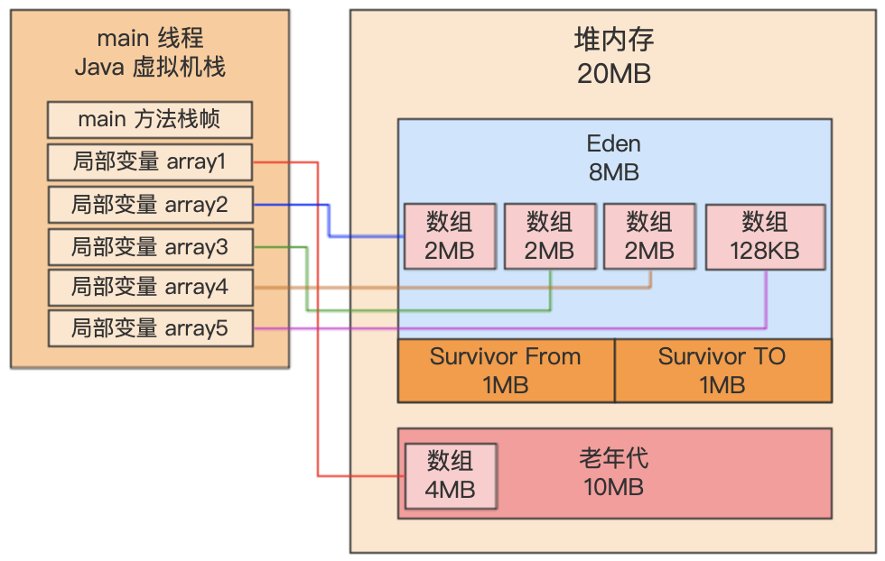
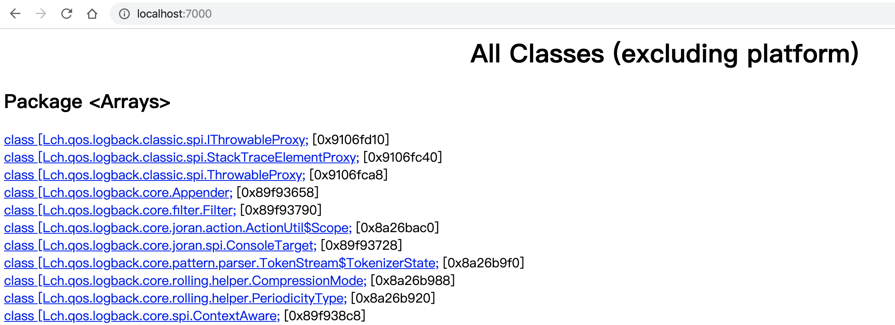

# JVM 信息 Java HotSpot(TM) 64-Bit Server VM (25.211-b12) for bsd-amd64 JRE (1.8.0_211-b12), built on Apr 1 2019 20:53:18 by "java_re" with gcc 4.2.1 (Based on Apple Inc. build 5658) (LLVM build 2336.11.00)
# JVM 退出的时候打印出来的当前堆内存的使用情况 Heap par new generation total 4608K, used 2418K [0x00000007bf600000, 0x00000007bfb00000, 0x00000007bfb00000) eden space 4096K, 51% used [0x00000007bf600000, 0x00000007bf80a558, 0x00000007bfa00000) from space 512K, 64% used [0x00000007bfa80000, 0x00000007bfad2640, 0x00000007bfb00000) to space 512K, 0% used [0x00000007bfa00000, 0x00000007bfa00000, 0x00000007bfa80000) concurrent mark-sweep generation total 5120K, used 0K [0x00000007bfb00000, 0x00000007c0000000, 0x00000007c0000000) Metaspace used 2661K, capacity 4486K, committed 4864K, reserved 1056768K class space used 287K, capacity 386K, committed 512K, reserved 1048576K
Heap par new generation total 4608K, used 2418K [0x00000007bf600000, 0x00000007bfb00000, 0x00000007bfb00000) eden space 4096K, 51% used [0x00000007bf600000, 0x00000007bf80a558, 0x00000007bfa00000) from space 512K, 64% used [0x00000007bfa80000, 0x00000007bfad2640, 0x00000007bfb00000) to space 512K, 0% used [0x00000007bfa00000, 0x00000007bfa00000, 0x00000007bfa80000) concurrent mark-sweep generation total 5120K, used 0K [0x00000007bfb00000, 0x00000007c0000000, 0x00000007c0000000) Metaspace used 2661K, capacity 4486K, committed 4864K, reserved 1056768K class space used 287K, capacity 386K, committed 512K, reserved 1048576K
par new generation total 4608K, used 2418K：表示使用 ParNew 垃圾收集器负责的新生代总共有 4608KB 可用内存，目前已使用 2418KB。
# 省略... 0.077: [GC (Allocation Failure) 0.077: [ParNew: 6943K->321K(9216K), 0.0016511 secs] 6943K->2371K(19456K), 0.0017409 secs] [Times: user=0.01 sys=0.00, real=0.00 secs] Heap par new generation total 9216K, used 2451K [0x00000007bec00000, 0x00000007bf600000, 0x00000007bf600000) eden space 8192K, 26% used [0x00000007bec00000, 0x00000007bee14930, 0x00000007bf400000) from space 1024K, 31% used [0x00000007bf500000, 0x00000007bf550640, 0x00000007bf600000) to space 1024K, 0% used [0x00000007bf400000, 0x00000007bf400000, 0x00000007bf500000) concurrent mark-sweep generation total 10240K, used 2050K [0x00000007bf600000, 0x00000007c0000000, 0x00000007c0000000) Metaspace used 2662K, capacity 4486K, committed 4864K, reserved 1056768K class space used 287K, capacity 386K, committed 512K, reserved 1048576K
分析：
初始分配给 array1 三次 2MB 和 array2 128KB 大小的内存空间 ，其中包括一些辅助的未知对象，当需要给 array3 分配 2MB 的内存时，发现 Eden 区内存空间是不够的，所以触发第一次 Young GC。
# 省略... Heap par new generation total 9216K, used 836K [0x00000007bec00000, 0x00000007bf600000, 0x00000007bf600000) eden space 8192K, 10% used [0x00000007bec00000, 0x00000007becd1028, 0x00000007bf400000) from space 1024K, 0% used [0x00000007bf400000, 0x00000007bf400000, 0x00000007bf500000) to space 1024K, 0% used [0x00000007bf500000, 0x00000007bf500000, 0x00000007bf600000) concurrent mark-sweep generation total 10240K, used 6144K [0x00000007bf600000, 0x00000007c0000000, 0x00000007c0000000) Metaspace used 2661K, capacity 4486K, committed 4864K, reserved 1056768K class space used 287K, capacity 386K, committed 512K, reserved 1048576K
通过日志可以很清晰的明白。
eden space 8192K, 10% used：未知对象。
concurrent mark-sweep generation total 10240K, used 6144K：大对象直接进入老年代。
1.3 Full GC
对于 Young GC、Old GC、Minor GC、Major GC、Full GC 的理解。
三种常见的触发 Full GC 的、时机：
年轻代存活的对象太多并且老年代没有足够空间。
触发 Young GC 之前，老年代可用空间小于了历次 Young GC 后升入老年代的对象的平均大小，就会在 Young GC 之前，提前触发 Full GC。
# 省略... 0.071: [GC (Allocation Failure) 0.071: [ParNew (promotion failed): 6943K->7382K(9216K), 0.0024651 secs]0.074: [CMS: 8194K->6555K(10240K), 0.0018743 secs] 11039K->6555K(19456K), [Metaspace: 2655K->2655K(1056768K)], 0.0044161 secs] [Times: user=0.02 sys=0.00, real=0.01 secs] Heap par new generation total 9216K, used 2130K [0x00000007bec00000, 0x00000007bf600000, 0x00000007bf600000) eden space 8192K, 26% used [0x00000007bec00000, 0x00000007bee14930, 0x00000007bf400000) from space 1024K, 0% used [0x00000007bf500000, 0x00000007bf500000, 0x00000007bf600000) to space 1024K, 0% used [0x00000007bf400000, 0x00000007bf400000, 0x00000007bf500000) concurrent mark-sweep generation total 10240K, used 6555K [0x00000007bf600000, 0x00000007c0000000, 0x00000007c0000000) Metaspace used 2662K, capacity 4486K, committed 4864K, reserved 1056768K class space used 287K, capacity 386K, committed 512K, reserved 1048576K
日志分析：

接下来会分配 array6，那么此时还能放得下 2MB 的对象么？不可能了，因为 Eden 区已经放不下了。因此此时会直接触发一次 Young GC。
可以清晰看到，此时执行了 CMS 垃圾回收器的 Full GC，Full GC 其实就是会对老年代进行 Old GC，同时一般会跟一次 Young GC 关联，还会触发一次元数据区（永久代）的 GC。在 CMS 的 Full GC 之前，就已经触发过 Young GC 了，此时可以看到 Young GC 就已经执行过了，接着就是执行针对老年代的 Old GC，日志：CMS: 8194K->6555K(10240K), 0.0018743 secs。
其中新生代对象增长的速率与 Young GC 的触发频率和每次耗时可以通过命令清晰的获取到相关信息。那怎么评估每次 Young GC 后有多少对象是存活和进入老年代呢？
其实每次 Young GC 过后有多少对象会存活下来，这个没法直接看出来，但是有办法可以大致推测出来。我们可以很容易推算出来高峰期的时候多久发生一次 Young GC，比如 3 分钟会有一次 Young GC，那么此时我们可以执行下述 jstat 命令：jstat -gc PID 180000 10。这就相当于是让他每隔三分钟执行一次统计，连续执行 10 次。此时大家可以观察一下，每隔三分钟之后发生了一次 Young GC，此时 Eden、Survivor、老年代的对象变化。正常来说，Eden 区肯定会在几乎放满之后重新变得里面对象很少，比如 800MB 的空间就使用了几十 MB。Survivor 区肯定会放入一些存活对象，老年代可能会增长一些对象占用。所以这里的关键，就是观察老年代的对象增长速率。从一个正常的角度来看，老年代的对象是不太可能不停的快速增长的，因为普通的系统其实没那么多长期存活的对象。如果你发现比如每次 Young GC 过后，老年代对象都要增长几十 MB，那很有可能就是你一次 Young GC 过后存活对象太多了。存活对象太多，可能导致放入 Survivor 区域之后触发了动态年龄判定规则进入老年代，也可能是 Survivor 区域放不下了，所以大部分存活对象进入老年代。最常见的就是这种情况。如果你的老年代每次在 Young GC 过后就新增几百 KB，或者几 MB 的对象，这个还算情有可缘，但是如果老年代对象快速增长，那一定是不正常的。所以通过上述观察策略，你就可以知道每次 Young GC 过后多少对象是存活的，实际上 Survivor 区域里的和进入老年代的对象，都是存活的。你也可以知道老年代对象的增长速率，比如每隔 3 分钟一次 Young GC，每次会有 50MB 对象进入老年代，这就是年代对象的增长速率，每隔 3 分钟增长 50MB。
关于 Full GC 的触发时机和耗时？
只要知道了老年代对象的增长速率，那么 Full GC 的触发时机就很清晰了，比如老年代总共有 800MB 的内存，每隔3分钟新增 50MB 对象，那么大概每小时就会触发一次 Full GC。然后可以看到 jstat 打印出来的系统运行起劲为止的 Full GC 次数以及总耗时，比如一共执行了 10 次 Full GC，共耗时30s，每次 Full GC 大概就是需要耗费 3s 左右。
Usage: jmap [option] <pid> (to connect to running process) jmap [option] <executable <core> (to connect to a core file) jmap [option] [server_id@]<remote server IP or hostname> (to connect to remote debug server)
where <option> is one of: <none> to print same info as Solaris pmap -heap to print java heap summary # 显示 Java 堆详细信息，如使用哪种回收器、参数配置、分代状况等 -histo[:live] to print histogram of java object heap; if the "live" # 打印 Java 对象堆的柱状图，如果指定了“live”子选项，则仅计算活动对象 suboption is specified, only count live objects -clstats to print class loader statistics # 打印类加载统计信息 -finalizerinfo to print information on objects awaiting finalization # 显示在 F-Queue 中等待 Finalizer 线程执行 finalize 方法的对象 -dump:<dump-options> to dump java heap in hprof binary format # 生成 Java 堆转储快照 dump-options: live dump only live objects; if not specified, # 是否 dump 出存活的对象 all objects in the heap are dumped. format=b binary format file=<file> dump heap to <file> Example: jmap -dump:live,format=b,file=heap.bin <pid> -F force. Use with -dump:<dump-options> <pid> or -histo # 当虚拟机进程对 -dump 选项没有响应时，可使用这个选项强制生成 dump 快照 to force a heap dump or histogram when <pid> does not respond. The "live" suboption is not supported in this mode. -h | -help to print this help message -J<flag> to pass <flag> directly to the runtime system
-J<flag> Pass <flag> directly to the runtime system. For example, -J-mx512m to use a maximum heap size of 512MB -stack false: Turn off tracking object allocation call stack. -refs false: Turn off tracking of references to objects -port <port>: Set the port for the HTTP server. Defaults to 7000 -exclude <file>: Specify a file that lists data members that should be excluded from the reachableFrom query. -baseline <file>: Specify a baseline object dump. Objects in both heap dumps with the same ID and same class will be marked as not being "new". -debug <int>: Set debug level. 0: No debug output 1: Debug hprof file parsing 2: Debug hprof file parsing, no server -version Report version number -h|-help Print this help and exit <file> The file to read
For a dump file that contains multiple heap dumps, you may specify which dump in the file by appending "#<number>" to the file name, i.e. "foo.hprof#3".
All boolean options default to "true"
1 2 3 4 5 6 7 8 9 10
# jhat dump.bin Reading from dump.bin... Dump file created Sun Nov 24 10:42:54 CST 2019 Snapshot read, resolving... Resolving 1321689 objects... Chasing references, expect 264 dots........................................................................................................................................................................................................................................................................ Eliminating duplicate references........................................................................................................................................................................................................................................................................ Snapshot resolved. Started HTTP server on port 7000 Server is ready.

2.1.5 jstack：Java 堆栈跟踪工具（Strack Trace for Java）
1 2 3 4 5 6 7 8 9 10 11 12 13 14 15
Usage: jstack [-l] <pid> (to connect to running process) jstack -F [-m] [-l] <pid> (to connect to a hung process) jstack [-m] [-l] <executable> <core> (to connect to a core file) jstack [-m] [-l] [server_id@]<remote server IP or hostname> (to connect to a remote debug server)
Options: -F to force a thread dump. Use when jstack <pid> does not respond (process is hung) # 当正常输出的请求不被响应时，强制输出线程堆栈 -m to print both java and native frames (mixed mode) # 除堆栈 -l long listing. Prints additional information about locks -h or -help to print this help message